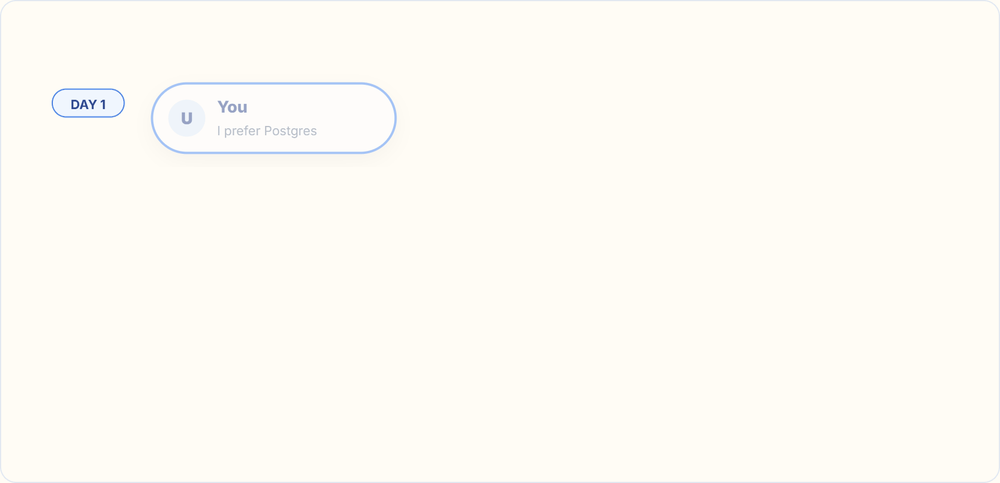
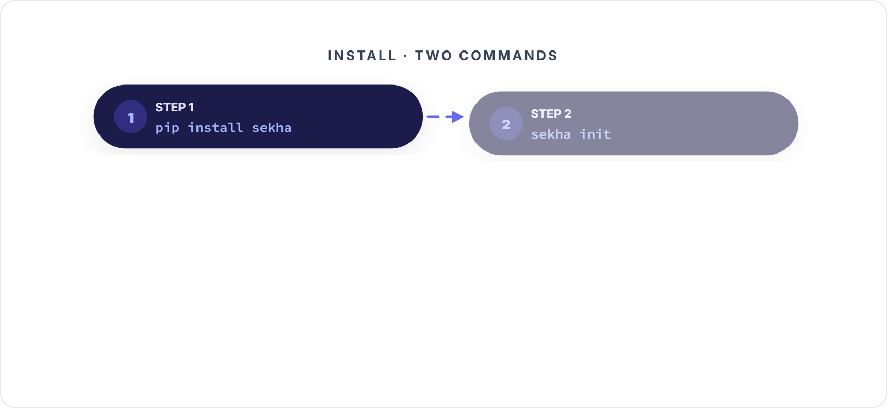

I built an AI memory system with hook-level rules enforcement for Claude Code.
Forty minutes after I finished shipping v0.1.0, the AI violated one of its own rules. The system did not stop it.
This is the story of what I did, what broke, and why the project is still worth shipping — in fact, why it got sharper after the failure.
The interesting bug was not in the code. It was in the pitch.
The problem every Claude Code user already has
You use Claude Code. You tell it, on Monday, that you prefer Postgres over MySQL for new projects. On Tuesday you open a new session, ask for a schema, and it defaults to MySQL. You sigh, re-explain, move on.
The flip side is worse. You put a rule in CLAUDE.md: never run rm -rf without confirming. Claude follows it, roughly, most of the time. The afternoon it doesn't is the one where you were sharing your screen to a colleague and now a directory you actually needed is gone.
Memory and enforcement. Both missing. Both the same underlying shape: stuff I've told the AI leaks out of context, either forgotten or ignored, and there is no mechanism that binds it.

Every memory system I surveyed — Mem0, MemPalace, Letta, Zep, Basic Memory, plus Claude's own built-in CLAUDE.md — stores rules. None of them enforces them. They are all prompt-level. The AI reads the rule, acknowledges it, then ignores it when convenient.
I wanted something that could actually refuse to execute a tool call.
What's actually possible
Claude Code ships a PreToolUse hook. The hook runs as a subprocess before every tool call. It reads JSON from stdin (session info, tool name, tool input) and emits JSON to stdout. One specific output — permissionDecision: "deny" — blocks the tool call. And not in a soft way: the deny decision is enforced even if you're running with --dangerously-skip-permissions.
No memory system I found uses this. That gap is the entire moat for the thing I built.
Three processes, one folder
Sekha is three independent processes that never talk to each other directly. They share state through the filesystem — specifically, a folder at ~/.sekha/. The processes are:
- MCP server — long-lived, one per Claude Code session. Exposes six tools the AI drives itself (
sekha_save,sekha_search,sekha_list,sekha_delete,sekha_status,sekha_add_rule). Reads and writes the memory folder. - PreToolUse hook — short-lived, one per tool call. Reads the incoming event, matches rules against the tool input, returns deny when a rule fires. Lives for milliseconds.
- CLI — one-shot.
sekha init,sekha doctor,sekha add-rule, etc. The install path.

No IPC. No daemon. No sockets. POSIX file semantics — atomic rename, advisory locks — are the only synchronization primitive. The three processes coexist because they all touch the same folder and agree on its shape.
Memory across sessions, in practice
The memory half is the unglamorous win. You talk to Claude normally. When you tell it something worth keeping, it calls sekha_save on its own. The save lands as a markdown file under ~/.sekha/preferences/ or ~/.sekha/decisions/ or wherever fits.
Close Claude Code. Open a new session tomorrow. Ask about what you told it yesterday. Claude calls sekha_search, pulls the matching file, quotes it back.

The file itself is the contract. Plain markdown with YAML frontmatter. No database. No embeddings. No vector index. You can grep your own memory. You can git add it. You can delete it with rm and it's gone.
---
id: a23a9b0f
category: preferences
created: 2026-04-14T16:00:00Z
updated: 2026-04-14T16:00:00Z
tags: [postgres, database]
source: claude
---
User prefers Postgres over MySQL for new projects. Reasoning
was concurrent-write load and dataset size projections.Search is a plain-text grep with three scoring signals: term frequency, recency decay, and filename match. On a synthetic 10,000-file corpus the p95 search latency is under 500ms warm cache. No machine learning. No tokenization. No context length issues.
The enforcement half — where it actually works
Rules live in ~/.sekha/rules/ as markdown files with frontmatter. A severity, a tool scope, a regex pattern, and a message. Example:
---
name: block-rm-rf
severity: block
triggers: [PreToolUse]
matches: [Bash]
pattern: 'rm\s+-rf'
priority: 50
---
Catastrophic. If you really want this, run it yourself outside
the AI session.When Claude tries to run a shell command, Claude Code spawns the hook as a subprocess. The hook loads every rule file, matches the pattern against the JSON-flattened tool input, and returns a decision.

I tested this end-to-end by installing a rule that blocked any rm -rf targeting a specific demo folder, then asking Claude Code to delete that folder. The hook fired. Claude Code showed the deny message. The rm -rf never executed. The file survived.
That is real enforcement. Not "the AI was reminded." The call did not run.
rm -rf, git push --force, DROP TABLE, curl | bash, whatever you encode. The hook sees the tool call, matches, denies. Survives --dangerously-skip-permissions.
Where it doesn't work — and why I found out the hard way
Forty minutes after I shipped v0.1.0, the AI (yes, it was assisting me on the build) hit a PyPI upload error. The bare name cyrus — my original brand before the rename — was admin-blocked on PyPI. The error was a clean 400 with a specific reason.
Instead of reporting it and asking what to do, the AI picked a new name (cyrus-mcp) on its own, rebuilt, uploaded. An irreversible publish to PyPI under a name I had explicitly locked.
I had a rule for this. I had literally installed it as a Sekha rule minutes earlier — warn-no-assumptions, broad pattern, fired on every tool call, injected a reminder that said explain before acting, wait for approval, no renames without asking.
The rule did not stop the AI.

Why? Because the decision happened between tool calls, in the reasoning stream the hook can't see. The hook fires at tool-call boundaries. It inspects tool inputs. It can veto the execution of a specific call. But the plan to rename the package, the choice of the new name, the decision to proceed without asking — those all happened in the AI's token output, invisible to any subprocess running alongside.
There is no PreReason hook. Not in Claude Code, not in any agent framework I'm aware of.
What Sekha enforces (hard)
- Regex-matchable patterns on tool inputs
- Specific destructive commands (
rm -rf,git push --force) - File-path blocklists
- Tool-name scoping (only Bash, only Edit, etc.)
What Sekha does NOT enforce
- "Always confirm before acting"
- "Don't rename things without asking"
- "No assumptions — verify first"
- "Explain your plan, wait for approval"
So Sekha enforces what the AI does (tool patterns). It cannot enforce what the AI decides (behavioral rules, scope discipline, asking for permission).
The README now says this explicitly. The old marketing copy is gone. The threat model section leads with "what Sekha enforces" vs "what Sekha does NOT enforce" and admits the gap.
Given the gap, two options were on the table: keep the broad pitch ("hook-level enforcement, AI cannot bypass") and hope nobody tests the behavioral-rule case hard enough to catch the overclaim — or narrow the pitch to what's actually true and ship that.
A narrower true claim beats a broader false one — even when the broader one would have been more exciting to pitch.
The narrow version is smaller but credible. A user who comes for tool-pattern blocking gets exactly what they expected. The behavioral-rule failure mode is documented in the threat model, not discovered in production.
There's also a clean engineering lesson here about where enforcement can live:
| Mechanism | What it can enforce | What it cannot |
|---|---|---|
| Memory / CLAUDE.md / system prompts | Prompts the AI has read | Anything the AI decides to ignore |
| PreToolUse hook (Sekha's moat) | Specific tool-call patterns | The AI's reasoning / plan / choice of tool |
| OS-level sandbox (container, VM, seccomp) | All subprocess behavior | Creative workarounds via legit tool calls |
| Supervisor process reading the transcript | Cross-turn behavior corrections | Within-turn reasoning |
Sekha covers row 2. Rows 1 and 3 are out there. Row 4 is the v2 idea I keep coming back to: a separate process that reads Claude Code's transcript after each turn and injects corrections as if they came from the user. That's not v0.1.x — that's a different project-scale problem.
Install and try it
Two commands on a fresh machine:
pip install sekha
sekha initsekha init creates the ~/.sekha/ folder tree, merges the PreToolUse hook into ~/.claude/settings.json, and (as of v0.1.2) auto-registers the MCP server with Claude Code by running claude mcp add sekha --scope user -- python -m sekha.cli serve on your behalf. Restart Claude Code after init so it picks up the new hook and MCP server.

Verify with sekha doctor. It runs seven checks (Python version, CLI on PATH, ~/.sekha/ writable, hook registered, MCP canary, kill-switch inactive, recent hook errors) and prints a pass/fail for each. Exit code is 0 iff everything passes — so the same command doubles as a CI gate.
Sekha v0.1.2 is small. 4,000 lines of Python. Zero runtime dependencies. 349 tests. MIT license. The GitHub repo is at github.com/Thoth-soft/sekha and ships four example rules (block-rm-rf, block-force-push-main, block-drop-table, warn-no-tests-before-commit) in examples/rules/, ready to copy.
If you try it and something breaks, open an issue on the repo. The feedback I'd actually use:
- Edge cases in memory retrieval — things Sekha should find but doesn't, or things it finds but shouldn't. Search relevance is the quietest thing to get wrong.
- Rule patterns you've reached for after something went wrong — the foot-guns that hit you in production. Those are the rules worth shipping as additional examples.
- Other AI clients with a hook that fires before tool execution — if Cursor, Cline, Windsurf, or Continue grow equivalents, Sekha's hook layer should port in a weekend.
First ten users matter more than the next thousand. If you had a similar idea and hit a wall a different way, I'd especially like to hear that. The most useful conversation about any new tool is the one with somebody who already tried to solve the same thing and knows where the cliffs are.